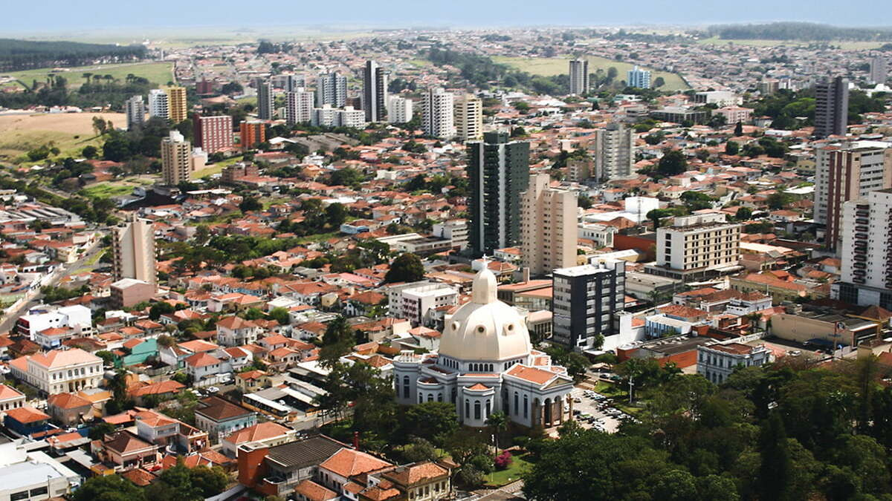

Study with us
Why study at ICMC?
Tradition
Since 1971, ICMC has offered excellent undergraduate and graduate courses and develops innovative research in the areas of Mathematics, Applied Mathematics, Statistics, and Computer Science.
High Qualified Professionals
ICMC has a highly qualified faculty, comprised of one hundred percent PhD holders working full-time.
Infrastructure
The Institute offers state-of-the-art facilities and resources, providing a learning and research experience with the aid of classrooms and auditoriums equipped with audiovisual and videoconferencing resources, laboratories with modern equipment, a library with an integrated collection, and 24-hour study rooms.
It's for Everyone
USP is a public university and courses are free. Scholarships and financial aid are offered to those with socioeconomic needs.
Employability
The fields of study at ICMC are highly valued in the job market, allowing students a wide range of career choices. The employability rate is high in both academia (universities and research centers) and the business world.
International Mobility Opportunities
ICMC has partnerships with universities and companies from various countries, enabling students and researchers to participate in and interact with professionals and cultures from around the world.
"It's a reference. When you go to a job interview, the staff already puts you in a position ahead of other people. The ICMC has a lot of structure for you to do research, study and make applications."
Afonso Vaz - ex student from Statistics course
Why study in São Carlos?

São Carlos is considered the national capital of technology and has the highest ratio of PhDs per capita in Latin America: one PhD for every 180 inhabitants. In Brazil, the ratio is one PhD for every 5,423 inhabitants.
Besides USP, the municipality has another large public university: the Federal University of São Carlos (UFSCar). It's also worth noting that the city houses a private university, a State Technological College of São Paulo (FATEC), two EMBRAPA research centers, technology parks, and business incubators. Due to its technological character, several multinational and large companies have established themselves in São Carlos, such as Volkswagen, Faber-Castell, Electrolux, and Tecumseh.
Here, the professional and academic opportunities typical of an emerging center are combined with the quality of life of an inland city. With approximately 240,000 inhabitants, the municipality is among the top 40 in Brazil in the Human Development Index (HDI, 2013).
São Carlos is located in the center of the state of São Paulo, on the edge of the Washington Luiz Highway, just 244 kilometers from the capital. It is 101 kilometers from Ribeirão Preto and 146 kilometers from Campinas. The city was founded in 1857, during the period of expansion of coffee cultivation.
Undergraduate courses
The table bellow presents a resume of all our undergraduate courses.
| Course | Rating* | Career | Period | Duration | Vacancies |
|---|---|---|---|---|---|
| Computer Science | ⭐️⭐️⭐️⭐️⭐️ | Bachelor's Degree | Full | 5 years | 85 |
| Computer Engineering** | ⭐️⭐️⭐️⭐️⭐️ | Engineering | Full | 5 years | 50 |
| Information Systems | ⭐️⭐️⭐️⭐️⭐️ | Bachelor's Degree | Evening | 4 years | 50 |
| Exact Sciences** | ⭐️⭐️⭐️⭐️ | Teaching Degree | Evening | 4 years | 40 |
| Statistics and Data Science | ⭐️⭐️⭐️⭐️⭐️ | Bachelor's Degree | Evening | 4 years | 30 |
| Mathematics | ⭐️⭐️⭐️⭐️⭐️ | Bachelor's Degree | Full | 4 years | 30 |
| Mathematics | ⭐️⭐️⭐️⭐️⭐️ | Teaching Degree | Full | 4 years | 30 |
| Data Science | not rated | Bachelor's Degree | Full | 4 years | 20 |
| Applied Mathematics and Scientific Computing | ⭐️⭐️⭐️⭐️⭐️ | Bachelor's Degree | Full | 4 years | 20 |
* ”Guia da Faculdade” ranking (max. 5 stars)
**shared responsibility with another USP school